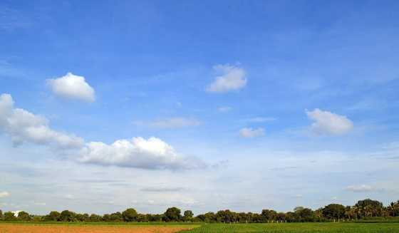
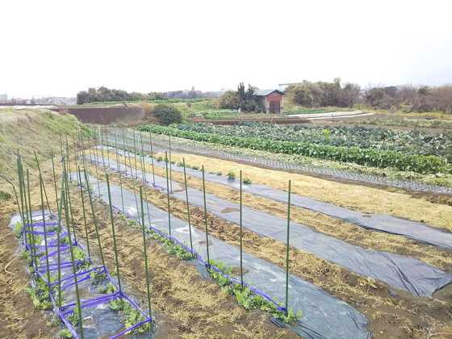
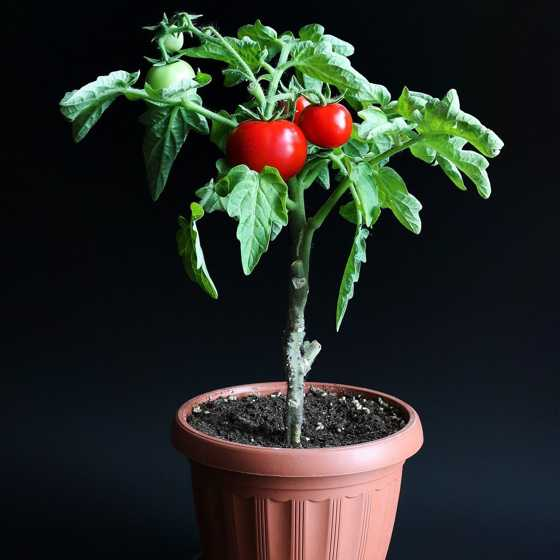
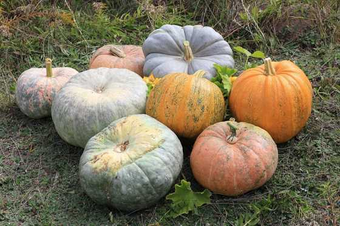
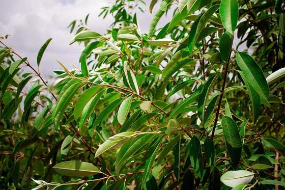
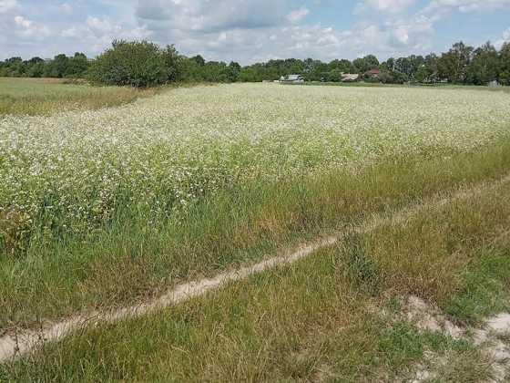
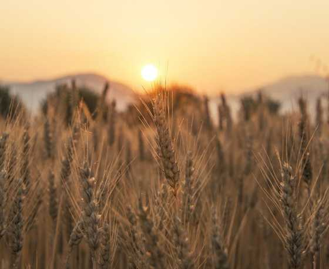
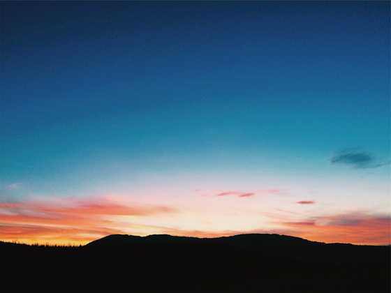

茨城県古河市諸川
畑のそばで、
空の色をひと休み。
農園とカフェがひとつになった場所で、収穫の季節と空の移ろいを感じながら過ごす。そんな時間を想い描いたページです。
掲載写真はフリー素材のイメージで、店舗の実際の様子ではありません。実際の写真は貴店ご提供のものに差し替えます。
お店について
農園と、そらいろのカフェ。
お店の名前は「渡邉ファーム・カフェそらいろ」。Instagramのハイライトには「ブルーベリー狩り」があり、農園を持つカフェであることがうかがえます。住所は古河市諸川1403-7で、アカウント名の数字(1403)もこの番地と重なります。
店名「そらいろ」の意味やオーナーの想いは確認できていません。「空の下の畑」というトーンは制作側のイメージです。








口コミ
お客さまの声 イメージ例
以下は制作側が作成したイメージ例で、実在のお客さまの声ではありません。
畑を眺めながらのんびりできて、時間がゆっくり流れる感じがしました。
イメージ例
空が広くて気持ちのいい場所。また季節を変えて来たいです。
イメージ例
家族でブルーベリー狩りのあとにひと休みできるのがうれしいです。
イメージ例
アクセス
ご案内
| 所在地 | 日本、〒306-0126 茨城県古河市諸川1403-7 |
|---|---|
| 電話 | 準備中 |
| 営業時間 | Instagramプロフィール掲載: 木・金・土 10:00〜17:00 / 日 10:00〜16:00(変更の可能性があるため最新情報はInstagramでご確認ください) |
| 定休日 | 準備中 |
| @sorairo.1403 |